ARTIKEL
Informasi Seputar digital signage Outdoor
Temukan informasi, tips, dan panduan seputar digital signage outdoor untuk kebutuhan periklanan, perusahaan, retail, event, pemerintahan, dan area publik.
Semua Artikel
Panduan
Memilih Pitch LED digital signage Outdoor yang Tepat untuk Lokasi Anda
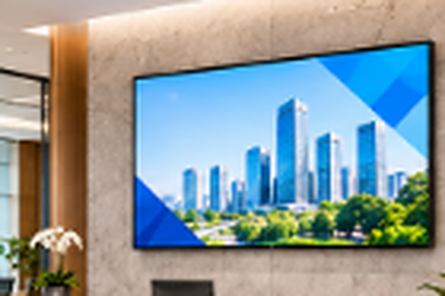
Perawatan
Tips Perawatan digital signage Outdoor agar Awet Bertahun-tahun
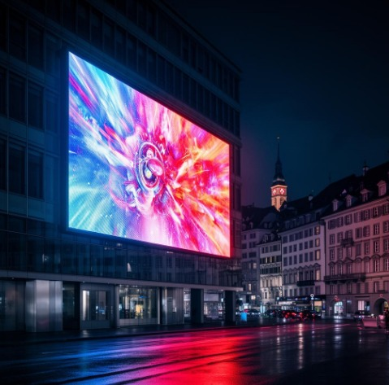
Bisnis
Menghitung ROI Iklan digital signage untuk Bisnis Anda
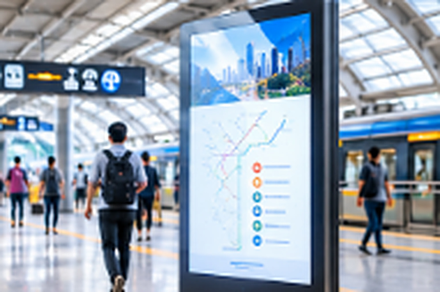
Instalasi
Tahapan Instalasi digital signage Outdoor yang Aman
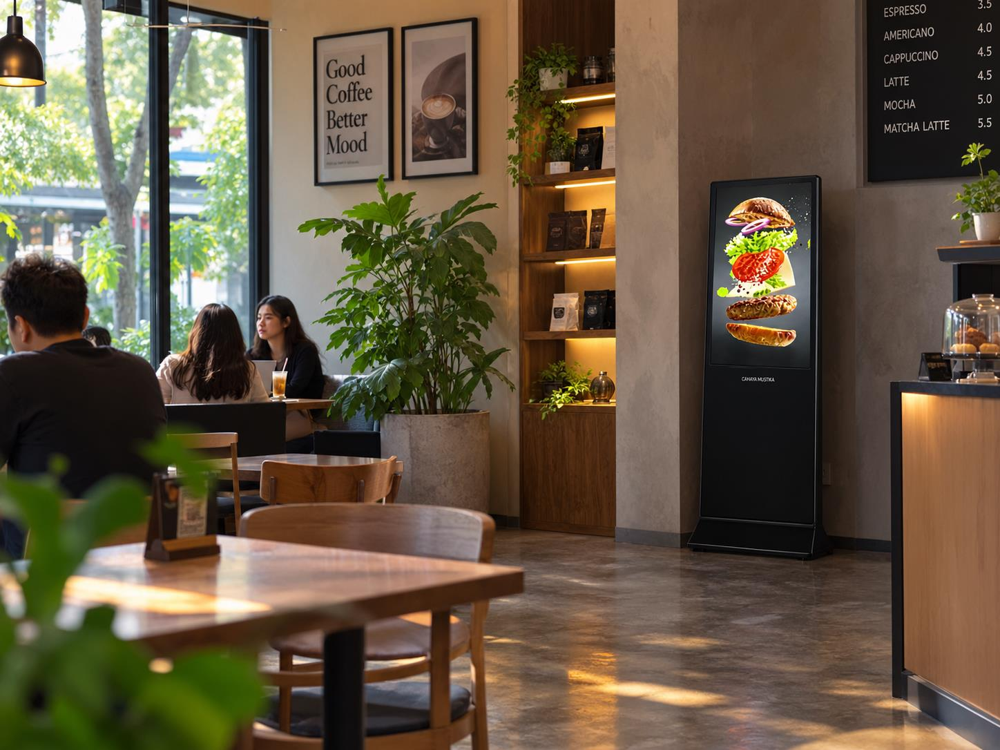
Panduan
Perbedaan digital signage Indoor dan Outdoor yang Perlu Diketahui
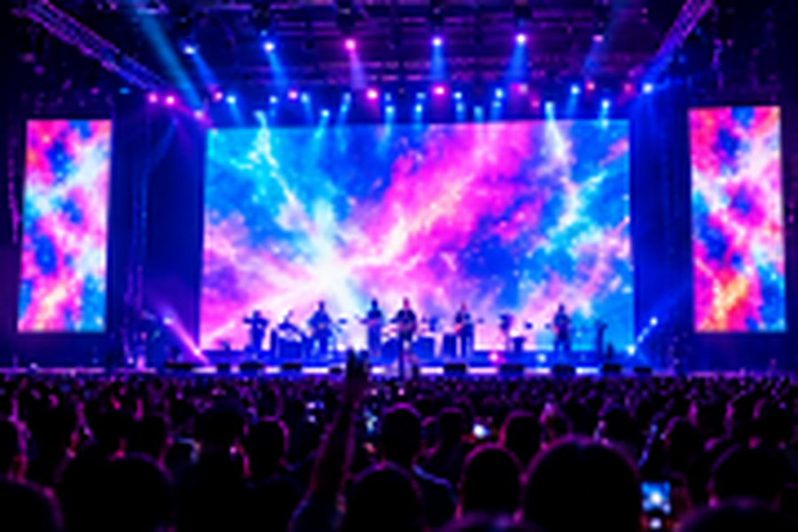
Konten
Cara Membuat Konten digital signage yang Menarik Perhatian
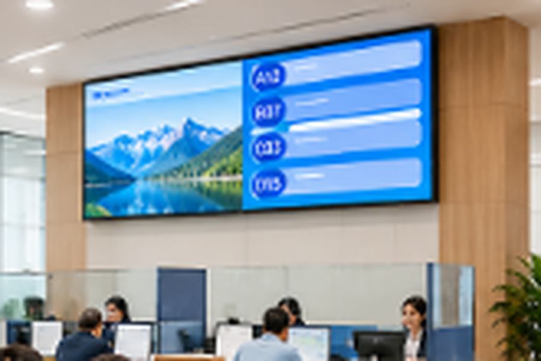
Panduan
Menentukan Ukuran digital signage Sesuai Jarak Pandang
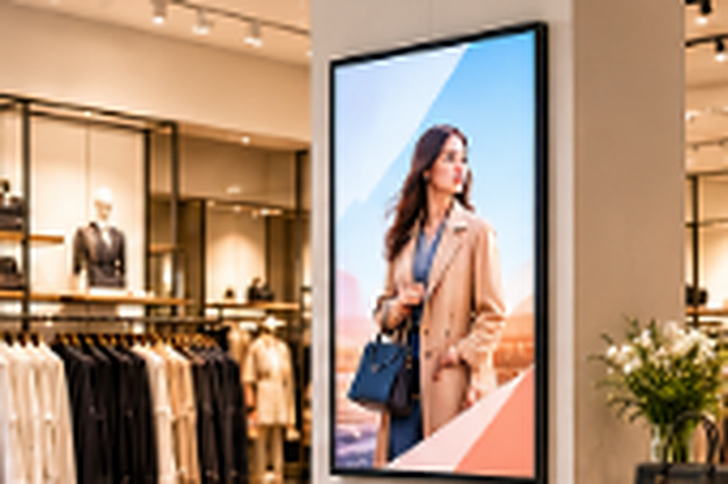
Bisnis
digital signage untuk Retail: Meningkatkan Perhatian Pengunjung
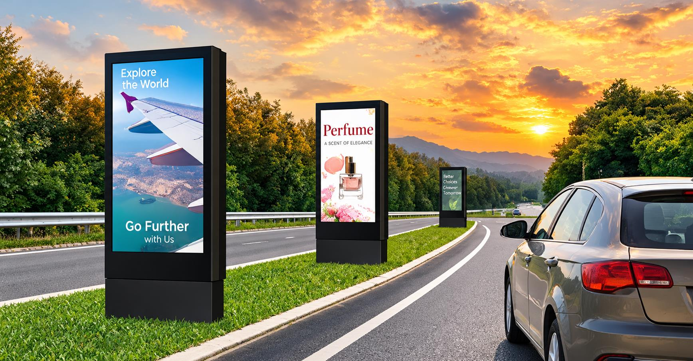
Perawatan
Mengenal Tingkat Ketahanan Cuaca pada digital signage Outdoor
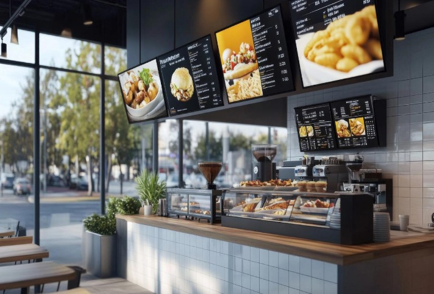
Teknologi
Mengelola Konten digital signage Secara Terpusat
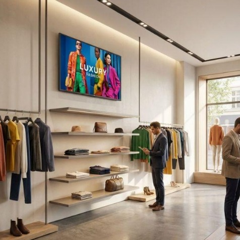
Instalasi
Memilih Struktur dan Dudukan digital signage yang Tepat
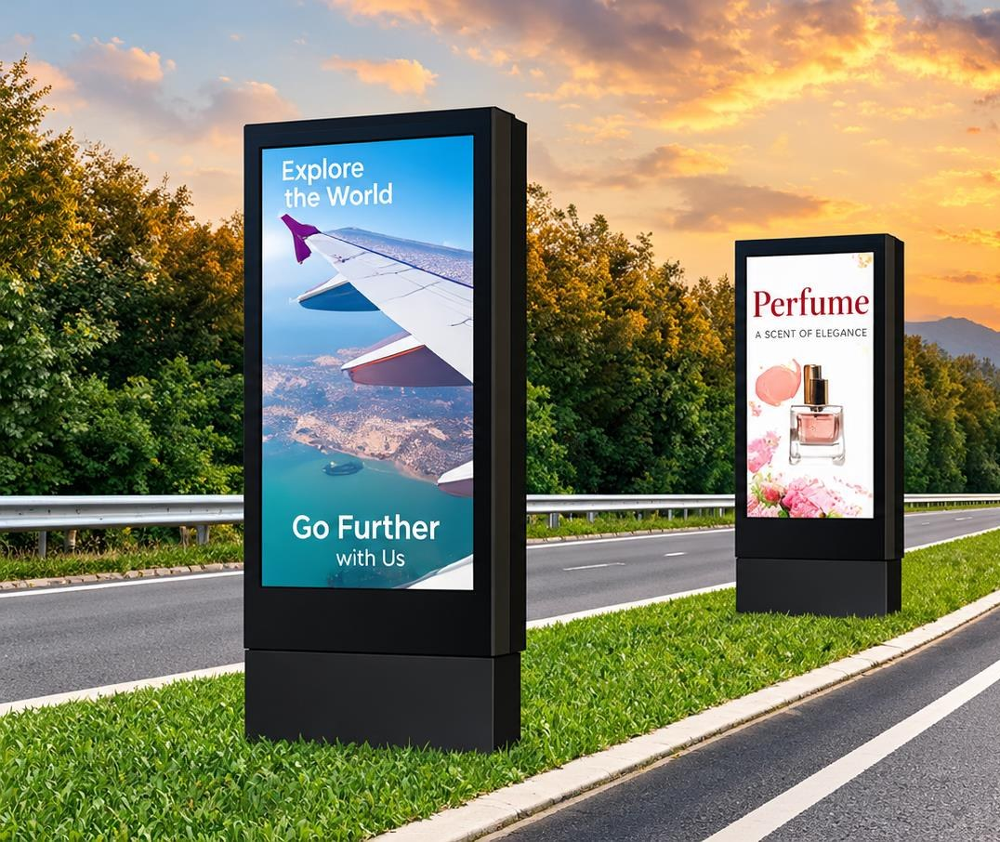
Bisnis